DDoS技术简述
没有绝对安全的系统，每一个所谓安全的网络系统，最终都有一个不安全的隐患
DDoS：分布式拒绝服务（攻击）
DDoS攻击的手法暴力且直接，但破坏力惊人，至今也缺乏彻底的根治方法。
内容源：https://www.bilibili.com/video/BV1KQ4y117nq/
历史案例
1996-09-06，美国纽约，著名的互联网服务商Panix的服务器受到每秒高达150次的异常连续攻击，导致服务器疲于应付这些非法流量，而拒绝了正常用户的合法请求。这是目前大家比较认可的历史上第一次DoS攻击。
DoS： Denial of Service，拒绝服务，即通过占用网络服务资源让它应接不暇，从而拒绝正常的业务流量的一种网络攻击方式。
DDoS： Distributed Denial of service， DoS攻击的分布式版本，俗称“群殴”。
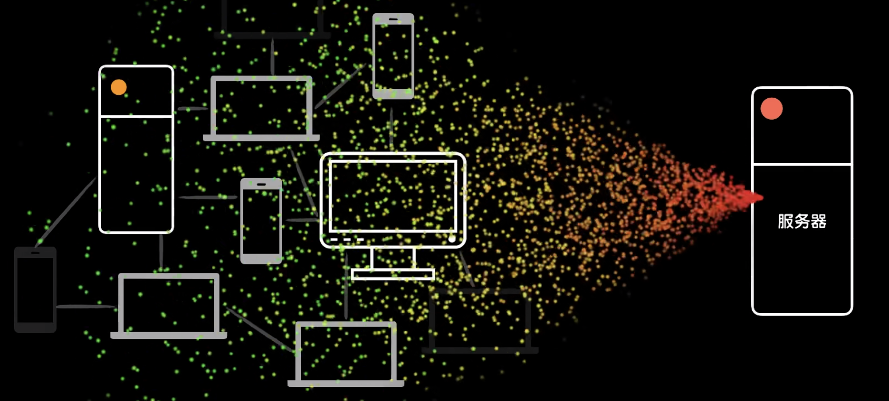
单台设备的攻击能力有限，治理起来也比较容易，但是当成千上万个设备组成一个网络同时攻击目标发起DoS攻击时无异于一场灾难。
发起攻击的网路一般称之为：僵尸网络（BotNet）
每个僵尸可以是一台个人电脑，可以是一台服务器，甚至可以是一部智能手机。为了得到这样的一个僵尸网络则是八仙过海，各显神通。
或因为穷或因为技术过硬的人士利用木马，蠕虫，后门等恶意程序感染大量设备形成僵尸网络。而富人则比较轻松，通过某些渠道直接花钱就可以购买到，理论上，花的钱越多得到的僵尸网络规模就越大，攻击力就越强。
1999-08-17，美国明尼苏达大学的服务器在至少200多台设备的DDoS攻击之下，服务被迫终止了2天。而这200多台发起攻击的蛇别都是在不知情的情况下被感染，成为了僵尸网络中的一员。在通过IP追踪并让设备停止攻击后，问题依旧没能完全解决，因为不断的有新的攻击设备加入进来。
DDoS攻击和其他利用程序漏洞攻击的阴谋不同，这种直接粗暴的方式算是一种阳谋，大家都知道是怎么发生的，但又无可奈何。
互联网（internet）通讯过程
为了了解DDoS攻击手段的巧妙，需要先了解一点互联网的工作方式。
一次网络访问的过程简化来看，是这样的：
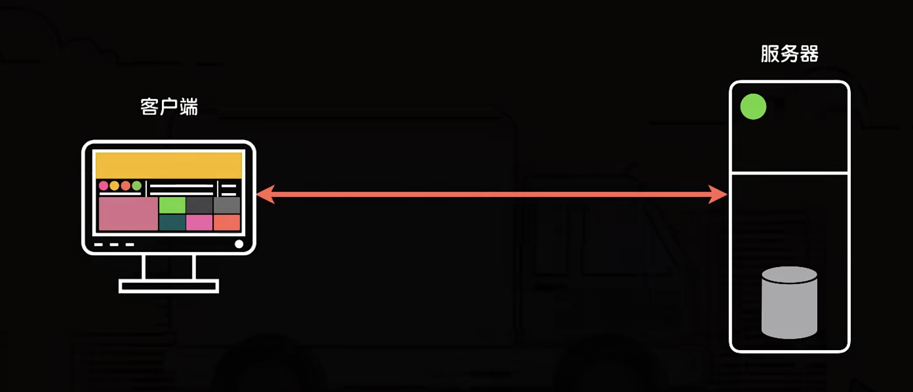
客户端通过网络线路向远程的服务器请求内容，服务器按照客户端的需求或查询或计算出相应的数据，再通过网络线路返送给客户端。这个数据在两端的行为和传统的邮递过程十分相像。
传统的邮递靠的是邮政系统，而现代互联网中的数据流转则是依靠以TCP/IP协议为核心的通信系统。TCP/IP的参考模型是一个4层结构（详细可以去看下blog中计算机网络基础知识这篇文章）
我们可以借助传统的邮递系统做个类比。
写信的时候，大家一般会遵从约定的格式。比如先写对方的称呼，加个冒号，再写正文。结尾写上“此致敬礼”，最后写上署名和日期。
这类似于4层结构中的应用层规定的一些数据内容的协议规则。比如我们网上冲浪时常用到的http协议就属于这一层。
写完信以后，我们可以做一个标记，比如沾上一根鸡毛，或盖上一个红戳。对方会根据这些标记决定如何回复。要不要加急，要不要确认一下对方的身份等。这类似于4层结构中的传输层。规定了数据的传输方式。比如这一层中大家熟悉的TCP协议，为了保证通信的可靠性，需要先经历3次握手再发起数据传输。实际上对于一次可靠的通信过程，事先的沟通是很必要的。这在日常生活中很常见。
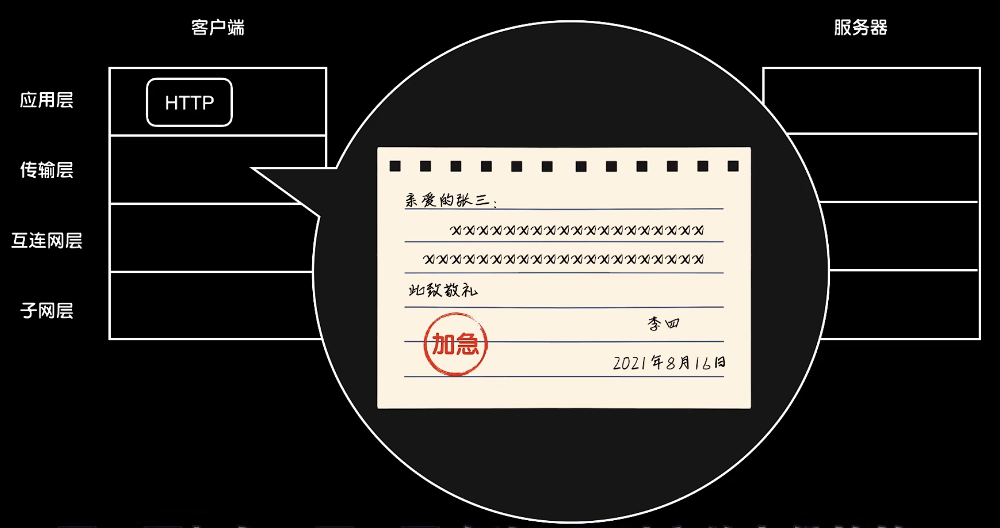
以三国演义中孙策对战太史慈为例：
“谁是孙策”
“你是何人”
“我是东莱太史慈，前来捉拿孙策”
“你就是太史慈，我正要会你”
“你是何人”
“我是孙策”
为了保证打架前没有搞错对象，孙策和太史慈反复确认了对方的身份之后才开始动手，TCP协议的3次握手做到了这一点。换句话说，在正式写信说正事儿之前，先发送3封确定彼此的信建立一种可靠的连接。
第一次，在TCP协议的信件上有几个关键的字段，在发起TCP连接时，我方先把SYN设置为1，ACK设置为0，再选择一个顺序号x，然后发出去。
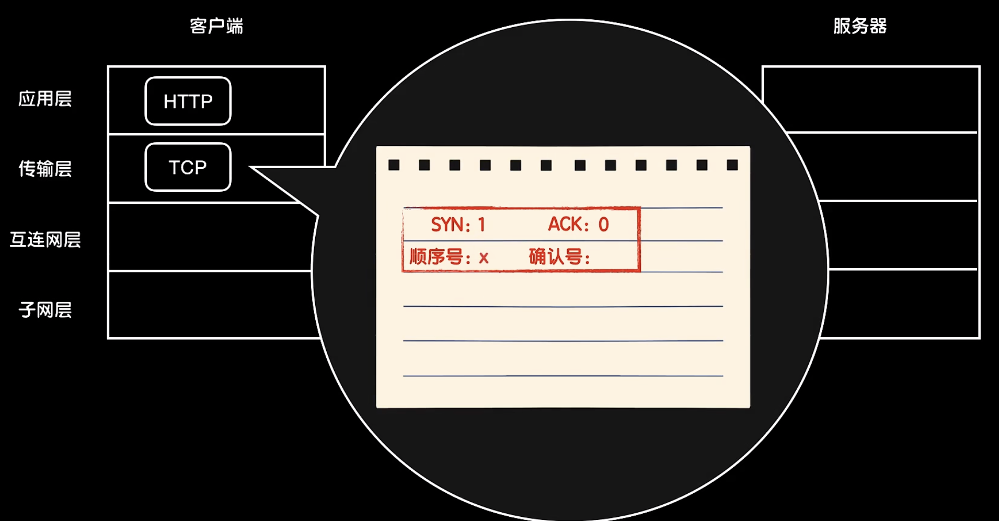
第二次，对方收到后回复一封信，把SYN设置为1，ACK设置为1，确认号设置为x+1，同时选择一个顺序号Y，返回我方。
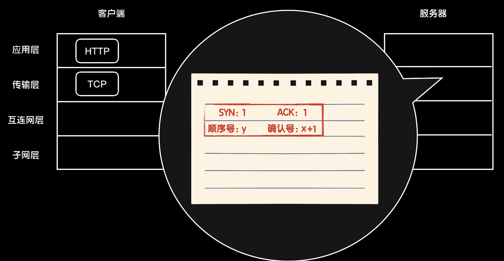
第三次，我方收到回信后，把SYN设置为0，ACK设置为1，确认号设置为y+1，顺序号设置为x+1，再次发送出去。
如此一个TCP连接就建立起来了。接下来就可以发送用户数据了。因为3次握手的存在，通讯更加的可靠，类似即时通信这样的软件，多采用TCP协议在客户端服务器之间建立一个连接通道。而这一层中还有一个著名的UDP协议。它没有这么麻烦，不需要反复握手建立连接，直接把数据投递出去，也不管对方收到没有。所以这是一种不可靠的协议，但是因为简单所以信息传递的快，多用于在线视频，音频的实现中。
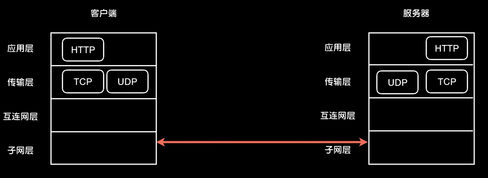
而用来装信件（数据）的信封类似于4层结构中的网络层，主要规定了双方地址的编码规则，这一层采用的是IP协议。即“设备IP地址”
而一封信的投递最终依靠的是邮局。邮局把信件打包装车之后，根据收件地址把信件投递到目的地，这一层对应着4层结构中的子网层，是信息传递的物理载体，比如：以太网（当下主要的），卫星网等等。
这4层结构从应用层到子网层，数据按照不同的协议不断的打包，到达目的地之后则刚好是相反的拆包过程而最终被目标接收。可以看出来其中最为核心的是互联网层中的IP协议。只要是按照IP协议封装数据都可以被发送。不论是以太网，卫星网等还是其他物理实现的子网。你只要按照新风尚的格式写好收发地址。装入的信件就可以被投递到目的地。不论是走陆运，空运还是海运，IP协议让不同子网络互联了起来。
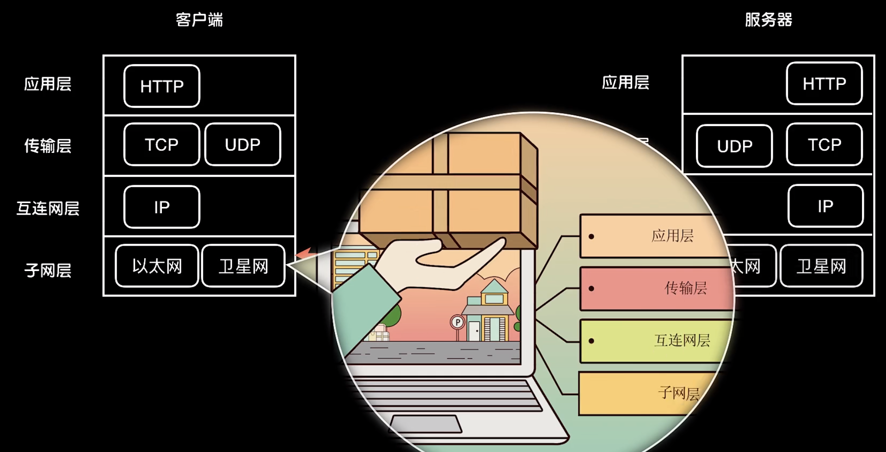
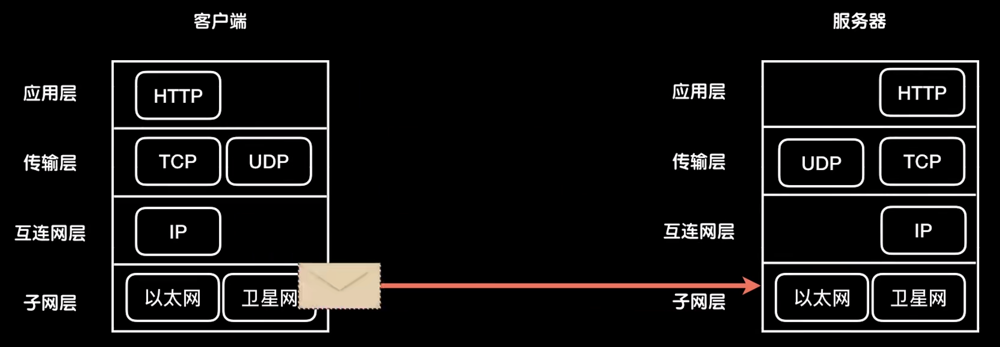
DDoS攻击手段
综上所述，从数据离开到最终到达这一路，几乎每一个地方都有被DDoS攻击的机会。
比如：霸占服务器的网络带宽资源
只需要向一台服务器发送大量的IP协议数据包。就可以慢慢的消耗掉对方的网络带宽。比如：用耳熟能详的ping工具就可以发起一次攻击。ping产生的是ICMP协议包，ICMP是IP协议中用来进行差错控制的一个补充，本质上还是一个IP包。这种攻击方式也称之为ICMP洪水（ICMP flood）。这种手段类似于我们不断的给某人投递信件，写了什么不重要，重要的是让信件多到邮递员在对方家门口排起长队，从而打断正常的信件收发。
同样的思路，还可以发送传输层的UDP协议包。发起一次UDP洪水攻击（UDP flood），当然这里有个问题：会暴露攻击设备的IP地址，导致禁封。所以攻击者一般会通过伪造IP地址隐藏自己。
比如：张三给李四写信，却把发件地址写成王五，这样即使是一封祖安问候信，李四也只能迁怒于王五，或者干脆写一个不存在的地址，让李四无处泄愤。但出于隐藏自己的目的，人们发明了一个更有趣的攻击方式：反射攻击
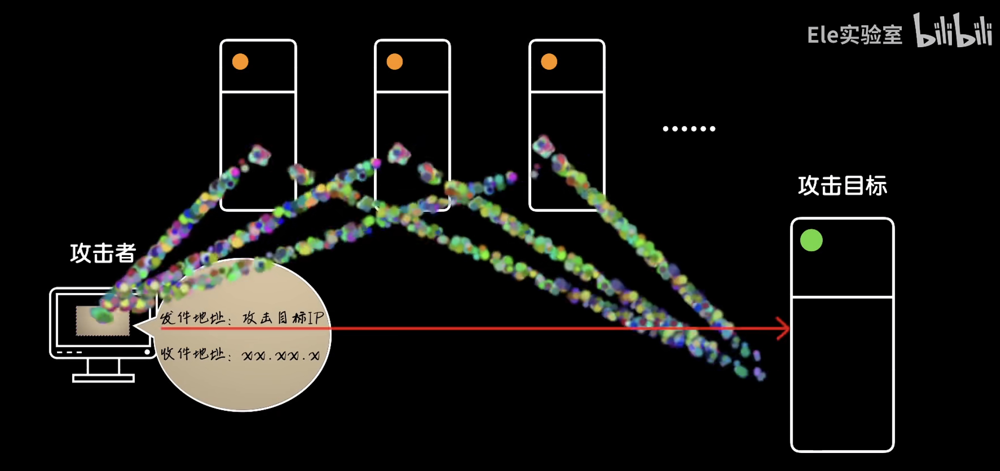
既然可以伪造IP，那么就不必拘泥于伪造发件人的身份，同样可以伪造收件人的身份达到借刀杀人的效果。我们把信封上的发件地址改为攻击目标的IP地址，收件地址设置为互联网上的大量第三方机器。从而把数据发送到这些第三方机器上，这些机器在接收到数据后，回复数据就会涌入发件地址指向的攻击目标。这些第三方机器也被称之为”反射器“。这有点像把别人的号码挂在一些网站上，然后记住被不明真相的推销员呼死。很损，但有效。反射攻击更难追踪来源，但更厉害的是，人们在此基础上又发明了一种把攻击流量放大以达到更强攻击效果的手段：放大攻击。
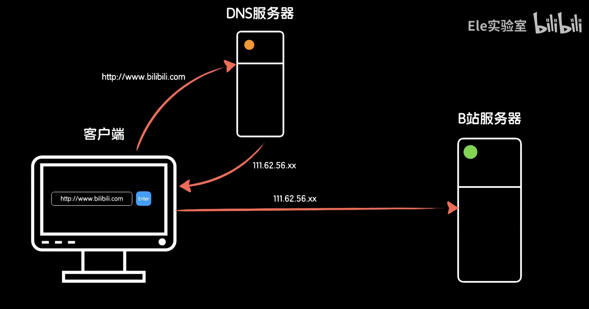
比如：DNS服务器是一种用来把域名解析为IP地址的设备。我们在浏览器中输入”www.bilibili.com “这样的域名地址，实际上需要先查询DNS服务器，获得这个域名对应的IP地址，再用IP地址访问B站的服务器。同时DNS查询通常使用UDP这个不用验证来源的传输协议，综合来看，DNS服务器就是一个很好的放大器。因为一次DNS查询请求，返回数据往往大于请求数据。这里有一个“带宽放大因子”BAF的概念。在DNS查询中，一般60byte的请求数据可以获得将近3000byte的返回数据。那么BAF=3000/60=50，即产生50倍的放大效果。如果我们让攻击者不断的去对DNS服务器发起查询请求，并把源地址伪造为攻击目标的IP，那么这样的反射攻击就会产生50倍的流量放大效果。
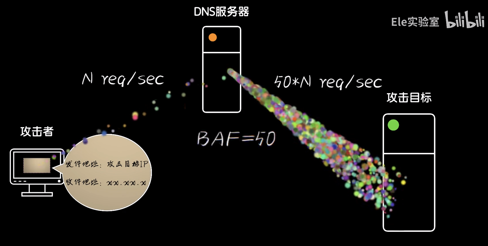
除了对目标带宽资源进行霸占以达到DDoS攻击效果外，因为TCP协议中有连接的概念，所以还可以攻击服务器的连接资源。服务器和客户端每次建立一个TCP连接时，需要建立3次握手将连接信息放入连接表中维护。而连接表的大小是有限的，我们可以让发起攻击的设备直接发起大量的TCP连接从而沾满服务器的这个连接表，而无法响应后续的TCP连接请求。从而达到DDoS攻击的效果。这种直接的方式称之为TCP洪水（TCPflood）。但因为有3次握手的存在，所以TCP洪水无法通过伪造IP隐藏自己。因为虚假的IP无法做出正确的回应导致无法建立连接。但是可以在建立连接的3次握手本身上做文章。
比如：只发送SYN不进行后续的回答这样“虚晃一枪”的SYN洪水。这样做的好处是，如果不回答攻击者的SYN+ACK数据，考虑到可能是网络环境问题，TCP中的重传机制会使得攻击目标多次尝试发送SYN+ACK直到超时。受害者不断的向攻击者发送SYN+ACK，比如重传10次，那这就相当于每攻击目标一次，对方就会回复10次。“杀敌1k自损1w”也不过如此。所以SYN洪水攻击一般都会伪造IP或不存在在的地址，让受害者拔剑四顾心茫然。抑或者是某个真实的倒霉蛋IP，将祸水东引。
同样的思路，在TCP协议中也可以通过反射发起攻击。向各个反射器发送SYN，将发件地址伪造成攻击目标，这样大量的SYN+ACK数据将涌入攻击目标。当然这种攻击方式因为无法在目标上建立连接。所以还是在攻击带宽。
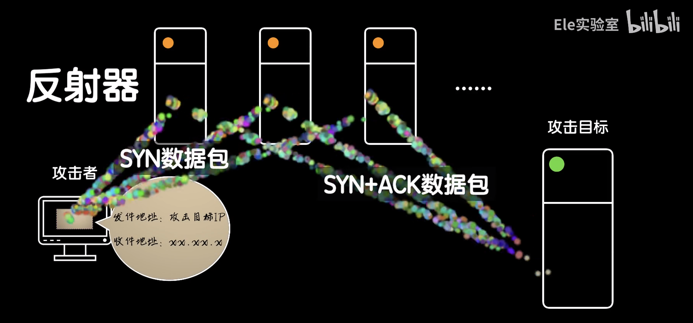
针对TCP协议还有一种巧妙的攻击手段：RST洪水攻击
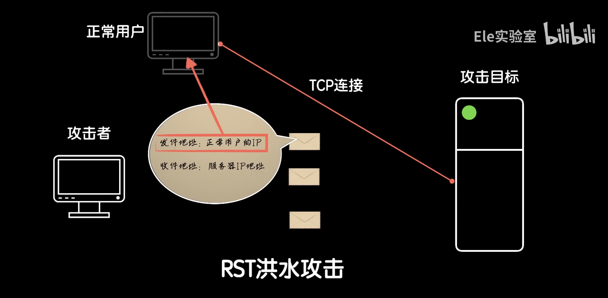
在TCP协议中，一般用4次挥手结束连接。但是为了防止异常，一方可以发送一个RST数据强制切断连接。让攻击设备不断的尝试伪造各种IP地址并发送RST数据进行“盲打”，一旦IP和其他的一些配置和某个正常用户的匹配上。就能够切断正常用户和服务器之间的连接。这种攻击方式更针对用户。
比如：在一场网络游戏对战中，在获悉对手的IP地址后，就可以不断切段对方的游戏设备和服务器的连接以干扰游戏。
不论是利用IP，UDP还是TCP协议攻击，针对的都是网络和连接资源。还有一种直接针对服务内部资源的攻击方式：消耗目标的计算和IO（资源）
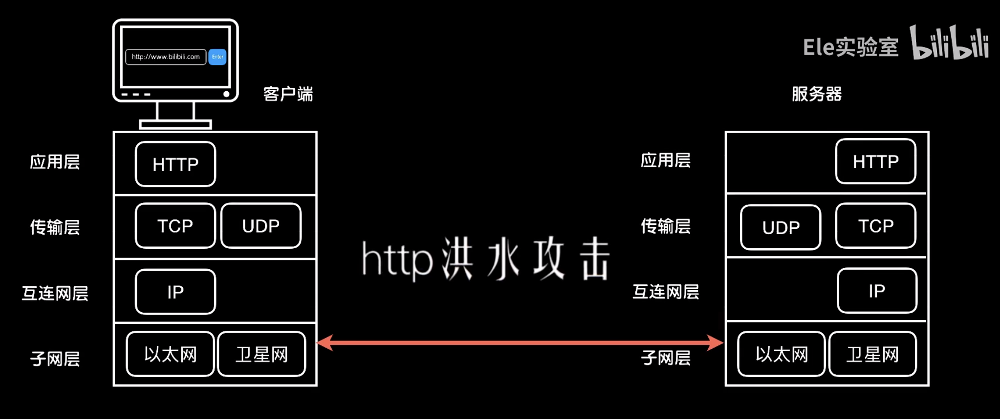
基于上述4层结构，作为第五层的用户，一般在网络冲浪时接触的都是应用层中像http这样的协议。所以我们可以对一个站点发起http洪水攻击。
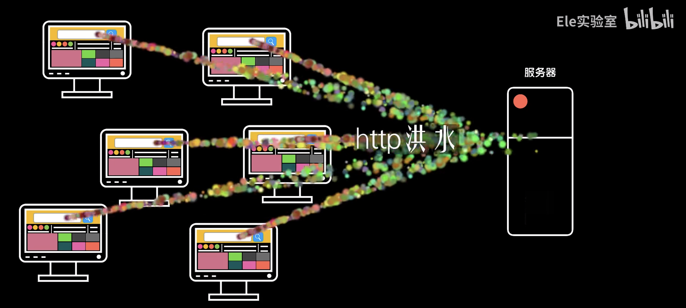
比如站点的搜索功能。不断的生成大量的关键词送入查询地址，因为http请求作为用户直接发起的设计具体业务的请求，服务器在收到请求和需要进行像数据库查询这样的IO操作。所以这样的攻击手法会对目标产生更大的消耗。当然http洪水攻击有个问题：不能伪造IP地址。
因为http协议是基于TCP协议的。需要经历3次握手。所以常见的方法是借助网络代理主机得到不同的真实IP发起攻击。这对于一次资金充足，有计划，有组织的攻击来说并不是一件难事。DDoS攻击还有一些其他方式，不再一一例举。
DDoS的治理和缓解方法
所谓有攻就有防。应对DDoS攻击的方法，主要有两个方向：
- 激进的【手术治疗】
- 稳妥的【保守治理】
捣毁僵尸网络并让用户做好个人防护，避免感染成为僵尸设备是一种很好的方法。但是这是需要长期持续进行的方案。两个典型的技术层面上治理DDoS攻击的方法。
从DDoS的攻击原理上我们可以看出来，伪造IP地址是DDoS攻击的核心技术之一，一旦攻击者无法伪造IP地址，那就形同冢中枯骨，强弩之末。而治理伪造IP的方法并不复杂。
现代互联网的下游，也就是用户设备接入的这一端。设备通过路由（或多个路由网关）接入互联网提供商（ISP），所以只要让路由设备检测IP，把源地址IP不属于本路由所网段的数据都过滤掉，这样试图伪造IP的流量就无法发出。
还有一个稍微复杂点的分布式过滤方案。庞大的互联网中不同的网段与奥路由把彼此连接，一个数据从甲发送到乙，它的IP可以伪造成丙，但是它所经过真实线路则不可能作假。
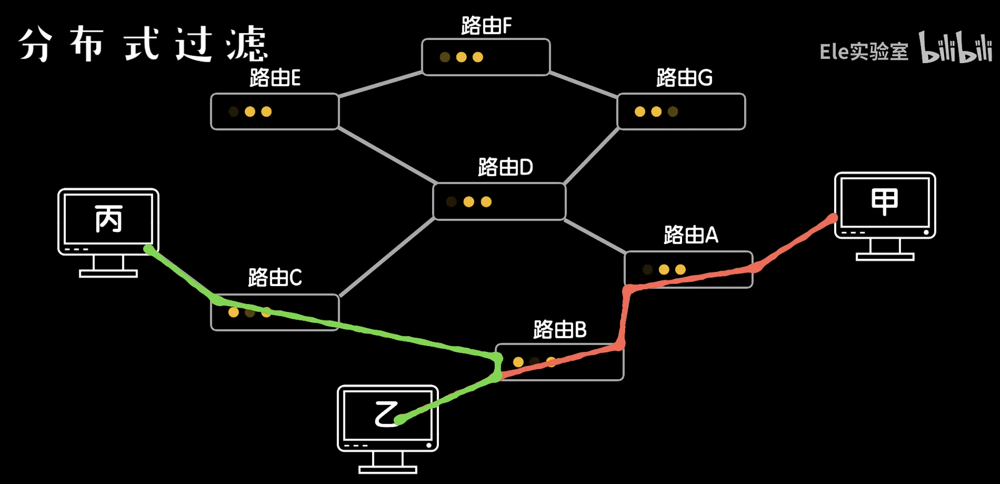
换句话说。从丙–>乙的数据不可能经过路由A，但这个伪造IP的数据从甲–>乙却经过了A。如果路由能根据IP地址的路径逻辑检测出矛盾，那么就会过滤掉这样的流量，从而消灭伪造IP的伎俩。
当然，一个涉及到用户，服务商，设备上，甚至是监管部门等多方的技术方案，那就不能只是一个技术问题。处于商业上投入产出的考虑，往往是木已成舟，积重难返。这两种方案很难被执行。只有有一定影响力的大型企业和机构才能撬动这种涉及全球的多方合作。对于中小企业，甚至是刚起步的创业者来说并不现实。
所以人们提出了一些大家都能承担的起的（也不一定）缓解DDoS攻击的保守治疗方案。
当前两种使用比较多的方法
DDoS攻击的可怕之处在于第一个D-分布式（Distributed）。
当一个僵尸网络上对目标发起进攻时，很难处理这些来自四面八方的流量。但所谓师夷长技以制夷，敌人可以群起而攻之，那作为守法公民，我们又何尝不能联合起来，把一个网络服务的流量分散到不同的地方，从而稀释流量。
比如目前各个站点普遍采用的CDN技术。把一些相对静态的资源作为缓存分发给各个CDN节点。用户在请求的时候从最近的节点返回，总这样就在一定程度上缓解了DDoS攻击。当然，CDN的缓解作用比较有限。
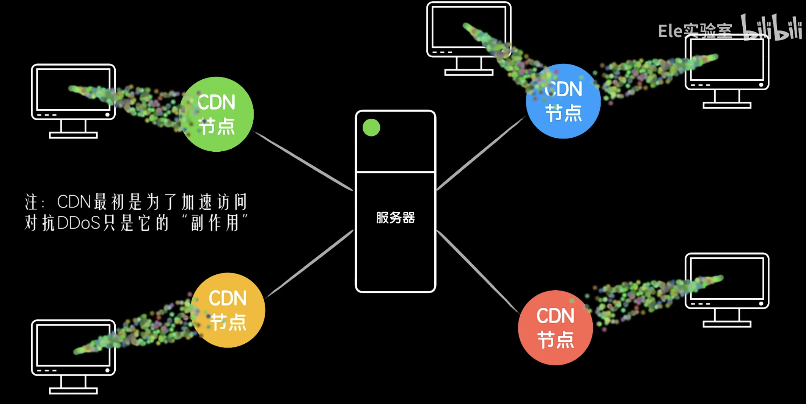
有一种目前比较主流的并有一些厂商专门为此开发产品的方案，流量清洗。我们在服务器前架设一台流量清洗设备。
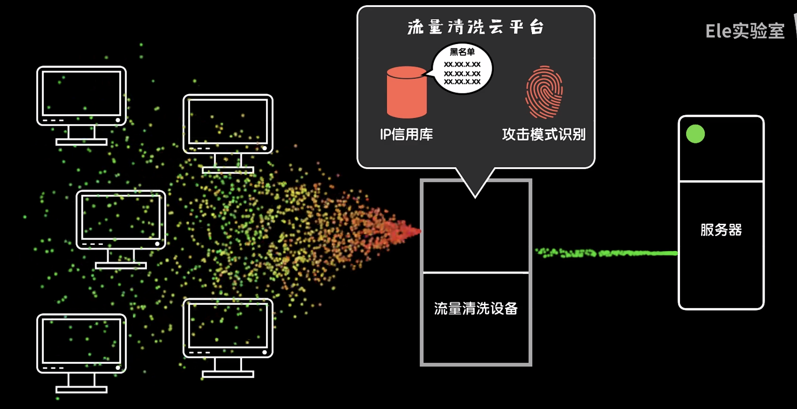
这个设备就像是一个身高马大的保镖和秘书，帮我们对抗DDoS流量。比如，面对TCP协议的SYN洪流DDoS攻击，客户端发起的SYN先经过清洗设备，由清洗设备回复SYN+ACK，如果对方答应了，那说明是正常的流量。清洗设备再把本次连接交给后方的服务器正常通讯。如果对方不应答，清洗设备该重试重试，超时之后就断开连接。但因为清洗设备人高马大，作为专门应对攻击的角色，对连接设备做了极大的专门的优化，能应对海量的连接请求。所以攻击者想要通过SYN flood打垮它非常困难。
再比如威胁极大的http flood攻击。正常来说，一个http请求很难用传统的方式检测出是恶意流量还是正常流量。而清洗设备往往会提供专业的流量清洗平台，这些专业做流量清洗的服务商通过多年和DDoS攻击的对抗，积累了大量的经验和技术。比如：由于http无法伪造IP地址，所以通过多年的数据积累建立IP信用库。从那些经常发起攻击的臭名昭著的IP发来的流量就会被过滤掉。
再比如，恶意流量由于是通过程序自动发出而不是人类操作，所以利用算法对流量进行模式识别就可以被检测出来。
但无论怎样，DDoS作为一种历史悠久且破坏能力巨大的黑客攻击手段，时至今日还是无法彻底被解决。
做好防护，保持警惕